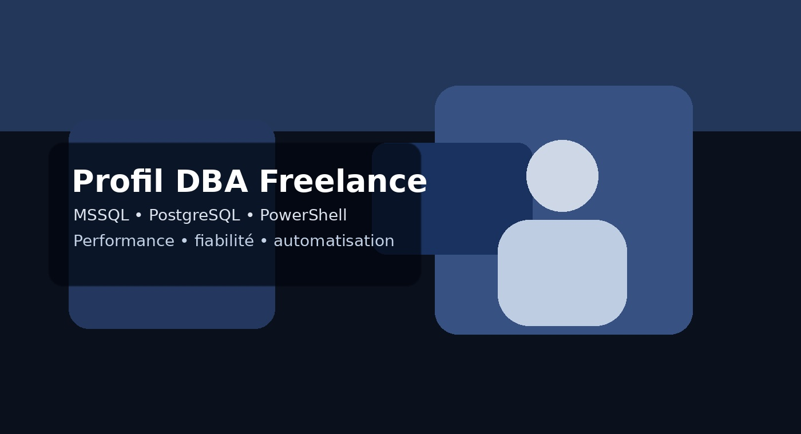
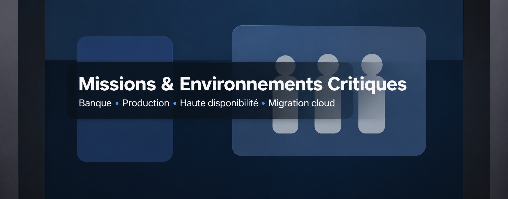

Profil

Luti IT accompagne les entreprises dans l’administration, la fiabilisation et l’industrialisation de leurs environnements bases de données.
Je suis DBA freelance, basé à Bruxelles, avec une forte expérience en environnements bancaires, production critique, migration, haute disponibilité et automatisation.
Objectif : fournir un profil DBA opérationnel, rigoureux et orienté résultat pour vos projets MSSQL, PostgreSQL et PowerShell.
Compétences

- MSSQL — administration, haute disponibilité, performance, sécurité, migration.
- PostgreSQL — administration, réplication, sauvegarde, haute disponibilité.
- PowerShell — automatisation, industrialisation, scripts DBA.
Interventions possibles : audit, support projet, migration, automatisation, troubleshooting, optimisation de requêtes et accompagnement d’équipes techniques.
Missions
Expérience significative comme DBA freelance dans des contextes exigeants : banque, production, migration cloud, automatisation, support build et amélioration de performance.
| CAGIP |
DBA Build MSSQL & PostgreSQL |
| CSSF |
Automatisation backup/restauration PowerShell |
| Crédit Agricole |
Build, audit, migration, performance, Always On |
| TF1 |
Migration SQL vers Azure |
| Humanis |
DBA Microsoft SQL Server, performance, sauvegarde/restauration, haute disponibilité |
| GDF-Suez |
DBA Oracle & SQL Server, performance, sécurité, disponibilité |
| ORBEM / Actiris |
Administration système, SQL Server, IIS, infrastructure serveurs |
Contact
Vous cherchez un DBA freelance pour une mission MSSQL, PostgreSQL ou PowerShell ?
Email : paluti@yahoo.com